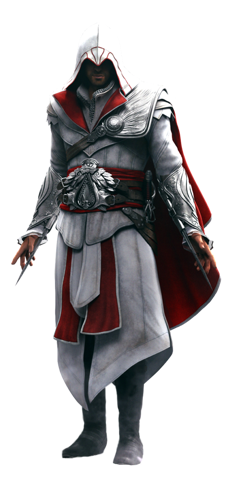

est un jeu vidéo développé par Ubisoft Montréal sous la direction de Patrice Désilets et Jade Raymond. Il s’agit d’un jeu d'action-aventure au gameplay non linéaire, incorporant des éléments d’infiltration. Il est édité par Ubisoft en novembre 2007 sur PlayStation 3 et Xbox 360, puis en avril 2008 sur PC (Windows), dans une version sous-titrée Director's Cut.
